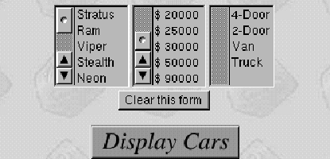

Table of Contents
Table of Contents
 Previous Section
Previous Section
Table of Contents
Previous Section
Common uses for component state include storing:
A simple example of component state can be seen in the first page of the DodgeLite example application, which list models, prices, and types of vehicles for the user to choose from:

The script for this component (Main.wos) declares instance variables for the values displayed in the browser and for the user's selection from the browsers. Before the page can be sent to the user, the instance variables that hold the values to be displayed (model, price, type) are initialized:
(The selectedModels, selectedPrices, and selectedTypes instance variables are bound to the selections attributes of the three WOBrowsers and so will contain the user's selections when the Display Cars button is clicked.)
When a user starts a session of the DodgeLite application, the Main component's init method is invoked, initializing the component's instance variables from data accessed through the application object. From this point on (subject to conditions discussed below), the Main component and its instance variables become part of the state stored for that user's session of the DodgeLite application. When the session is released, the component is also released. However, there are other techniques that allow you to control resource allocation on a component basis, as you'll see in the next section.
As with the session state, a component's state is accessible to other objects within the same session. As the result of a user's action, for example, it's quite common for one component to create the component for the next page and set its state. Looking again at the DodgeLite application, consider what happens when the user makes a selection in the first page and clicks Display Cars. The displayCars method in the Main component is invoked:
The new component is created by sending a pageWithName: message to the WOApplication object, and then a series of messages is sent to this new object to set its state before the object is returned as the response page.
id models, model, selectedModels;
id prices, price, selectedPrices;
id types, type, selectedTypes;
- init {
[super init];
models = [[WOApp modelsDict] allValues];
types = [[WOApp typesDict] allValues];
prices = [WOApp prices];
return self;
}
- displayCars {
id selectedCarsPage = [[self application] pageWithName:@"SelectedCars"];
...
[selectedCarsPage setModels:selectedModels];
[selectedCarsPage setTypes:selectedTypes];
[selectedCarsPage setPrices:selectedPrices];
...
[selectedCarsPage fetchSelectedCars];
return selectedCarsPage;
}
 Next Section
Next Section